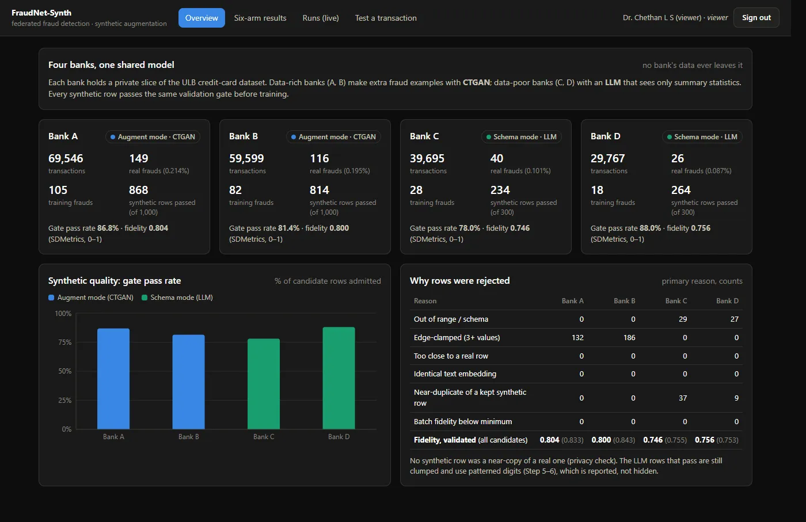
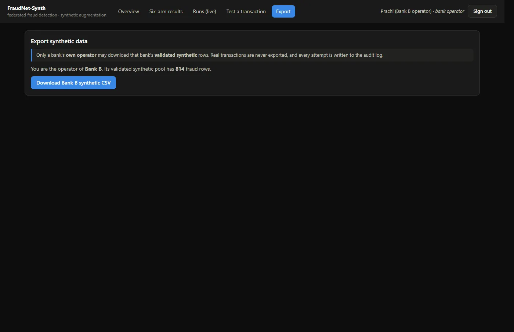

Understand the problem
Identify who is affected, what they struggle with and what the business needs before deciding what to build. At Edneuron I mapped four user segments and their journeys before any screens were drawn.
A Computer Science student who turns user problems and business needs into clear requirements, prioritized features and decisions a team can build.



I start with the problem, not the feature list. Then I structure what users and the business need, and help turn it into decisions a team can build.
Identify who is affected, what they struggle with and what the business needs before deciding what to build. At Edneuron I mapped four user segments and their journeys before any screens were drawn.
Structure requirements, compare options and choose what matters most. In Vayu AQI the product scores personal exposure on a route, not just a city AQI number, because that is the decision people actually make.
Turn ideas into workflows, rules and documentation a team can build and test. For the AI Voice Interviewer I built the first working version: role selection, resume upload and a live voice interview with a real-time transcript.
I treat every product as a set of decisions and requirements: who it is for, what problem comes first, which rules must hold, what to leave out and how to know it worked. I work from the user and the business at the same time, and turn both into something a team can build and test.
Waltcorp offers several technology and consulting services. I translated those business offerings and requirements into a structured information architecture and user flows, organized around the four questions a prospective client asks: what does the company do, how can it help, why trust it and how do I take the next step.
Find the real problem and who has it, before talking about features.
Vayu: people see a city AQI number but cannot tell if their own commute is risky.Understand users, stakeholders and constraints so the solution fits how people actually work.
Edneuron: personas for researchers, students, consultants and authors.Write down what the product must do, for whom and under which rules.
MentorConnect: roles, request, booking and review rules.Decide what goes in first and what waits, and be clear about why.
Vayu: suggest a change only when it cuts exposure by 12% or more.Turn decisions into workflows and documentation, and work with the build so they hold up.
AI Interviewer: built the first working version.Check the result against the requirement, and report honestly, including what did not work.
FraudNet: synthetic data showed no reliable gain, and the team reported it.Problems I have worked on, from discovery and requirements to delivery.
Banks cannot pool customer data to catch fraud, and smaller banks see too few fraud cases to learn from. FraudNet-Synth lets four banks train one shared fraud model without any bank sharing its data.

Interview practice usually means reading question lists alone, with nobody to ask a follow-up or say what was weak. The AI Voice Interviewer runs a spoken mock interview and gives feedback on each answer.

People in Indian cities see one AQI number for the whole city and cannot tell whether their own route or departure time is risky. Vayu forecasts air quality and scores each trip by personal exposure.

Students find mentors through scattered channels with no shared way to book, follow up or judge quality. MentorConnect puts the whole mentorship journey in one place.
My internships were design roles. What I describe here is the work that carries into product and business problems: requirements, user research, journey mapping and process design.
The skills behind the work on this site, from finding the problem to documenting and delivering the solution.
Deciding what to build and why
Turning needs into buildable requirements
A Computer Science foundation
I'm a final-year Computer Science student at PES Institute of Technology and Management, Shivamogga. My internships so far have been in design, and much of that work happened before any screen: working out who the users are, what is going wrong for them and what the business needs from the solution. That is the work I want to do full time.
My technical background helps me talk to engineers in their terms and judge what is realistic to build. I have built and shipped a product of my own, Vayu AQI, and worked in a four-person team on FraudNet-Synth, where privacy rules, evaluation and usability all pulled in different directions.
I like structured thinking and clear writing: a problem statement that fits in two lines, requirements a developer can test against and results reported honestly, including the ones that did not go as planned. I'm looking for a team where I can work on product and business problems and contribute from day one.
PES Institute of Technology and Management, Shivamogga (VTU)
I'm interested in opportunities to contribute to thoughtful products, solve meaningful problems and work with teams building useful solutions.